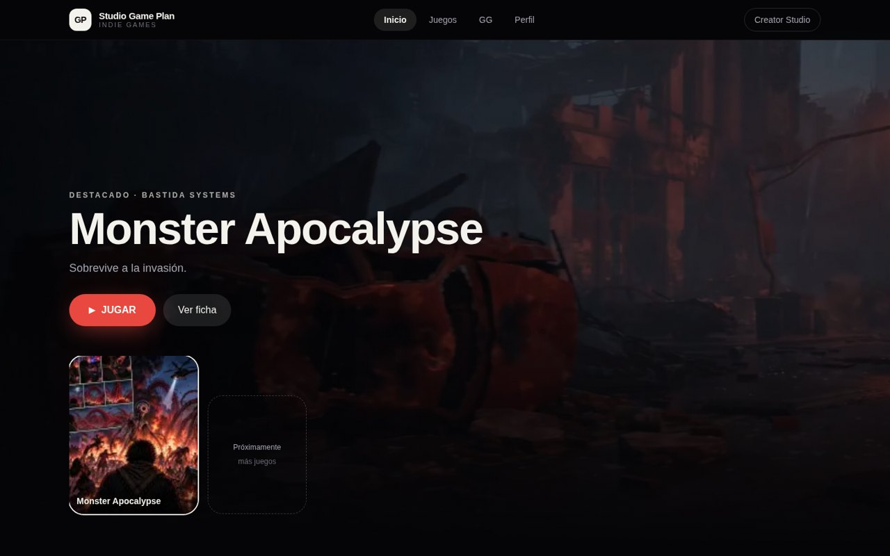
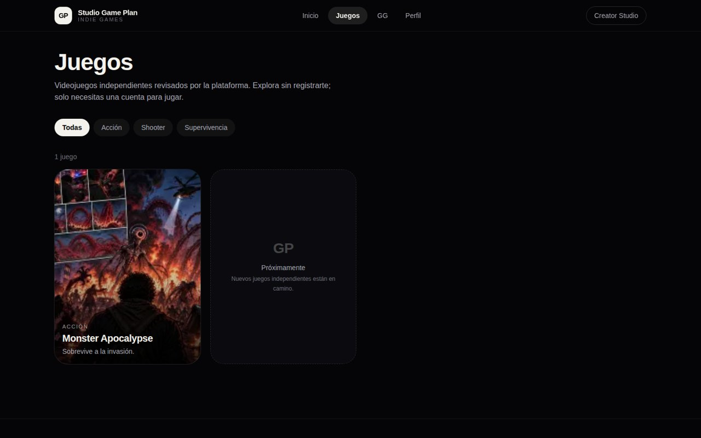
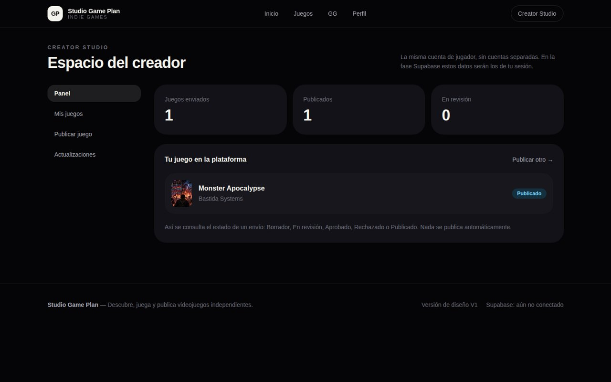
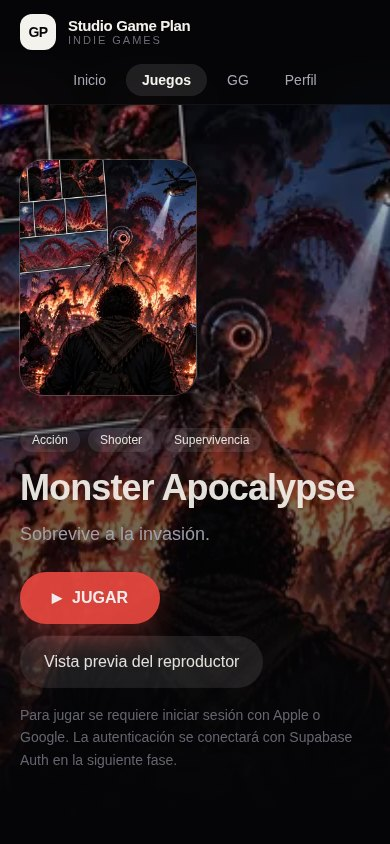
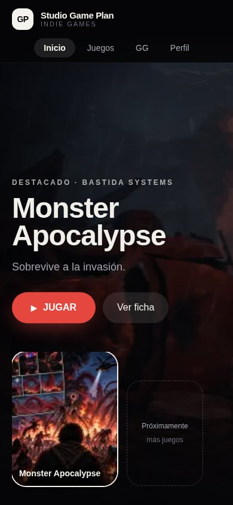
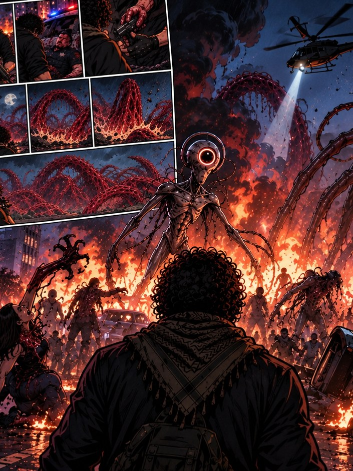
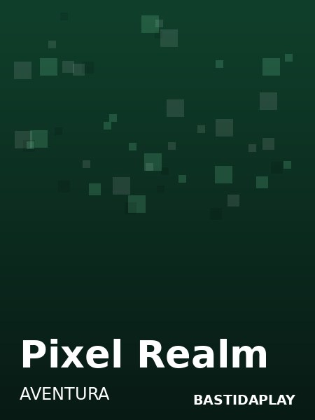
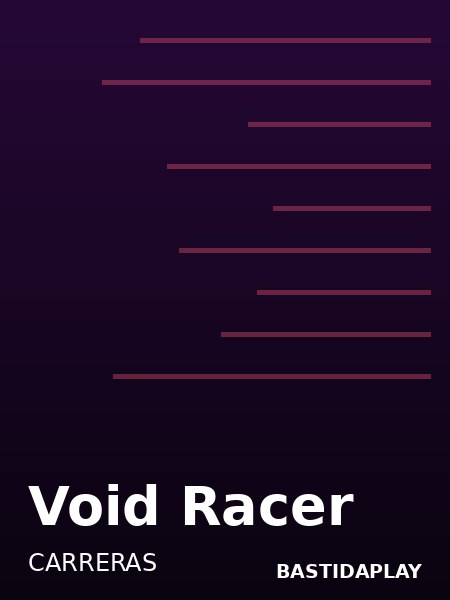
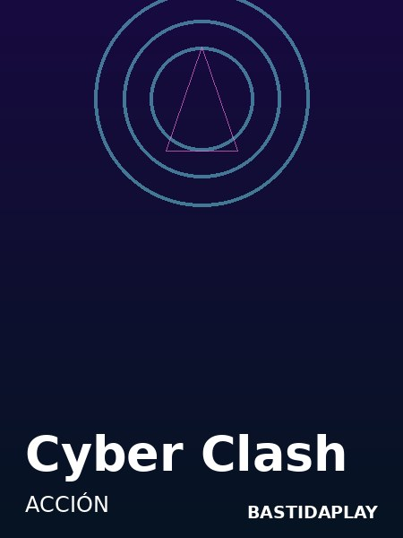
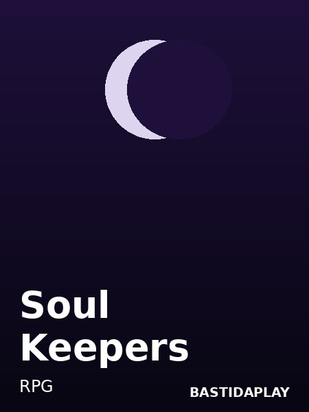

Descubre
Un catálogo de juegos independientes con portadas, categorías y destacados — pensado como una consola, no como una tienda fría.
Próximamente · La evolución de Studio Game Plan
BastidaPlay es la consola de Bastida Systems para los videojuegos independientes: un catálogo para descubrir juegos, un reproductor para jugarlos en el navegador y un estudio para que los creadores publiquen los suyos.

Capturas reales de la plataforma en preparación.
La plataforma
Un catálogo de juegos independientes con portadas, categorías y destacados — pensado como una consola, no como una tienda fría.
Los juegos web se juegan en el navegador, con reproductor integrado y pantalla completa. Sin instalar nada.
Con Creator Studio, cualquier creador puede subir su juego y publicarlo tras una revisión. Nada aparece en el catálogo sin pasar por ella.
Galería


Primer juego
Un shooter en primera persona contra oleadas de monstruos, hecho por Bastida Systems. Es el primer juego de BastidaPlay — y ya puedes jugarlo hoy en tu navegador.


El catálogo
Monster Apocalypse ya se puede jugar. El resto del estante viene en camino.

Monster Apocalypse
Acción · Shooter
▶ Jugar ahora
Pixel Realm
Aventura

Void Racer
Carreras

Cyber Clash
Acción

Soul Keepers
RPG
Para creadores
La misma cuenta sirve para jugar y para crear: sin registros separados.
En Creator Studio completas la ficha: portada, descripción, categoría y el juego web.
Cada juego se revisa antes de publicarse: aprobado, rechazado o con cambios pedidos.
Tu juego aparece en el catálogo, listo para descubrirse y jugarse.
Funciones
Mientras abre sus puertas, juega Monster Apocalypse hoy mismo. Y si eres creador y quieres estar en el catálogo desde el día uno, escríbenos.
¿Buscas la app actual de producción? StudioGamePlan sigue disponible en el App Store.